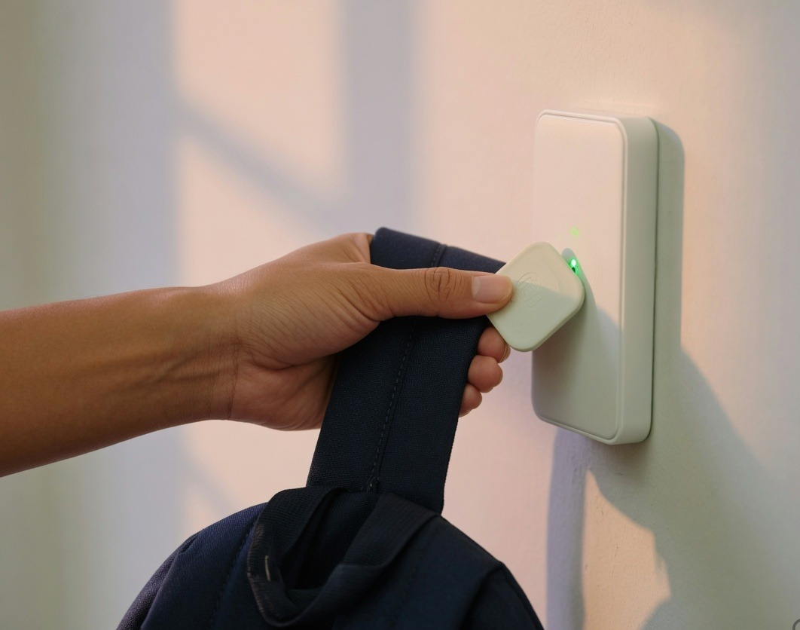
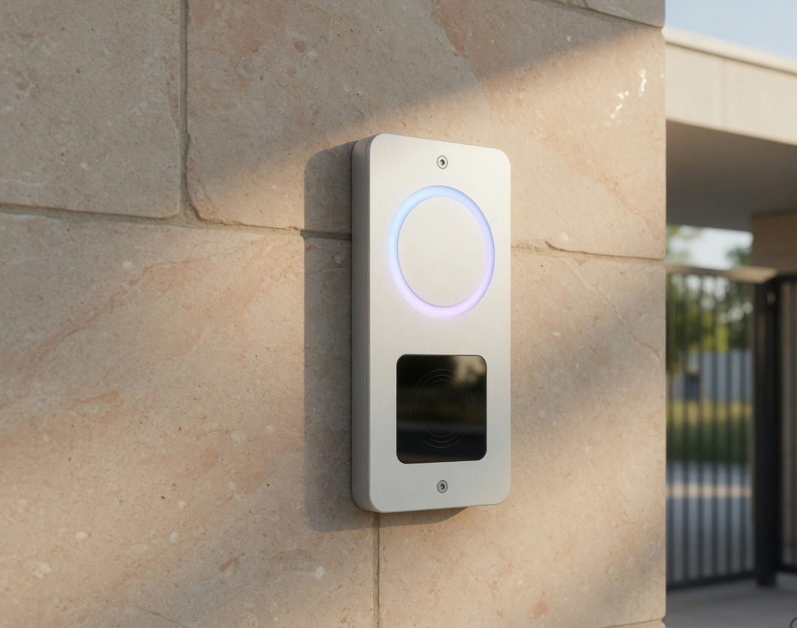

1. Tag
A durable NFC tag is clipped to the student’s bag. One tag, one student — nothing extra to carry.
Attendly · Smart Attendance
A small NFC tag on the student’s bag. A tap at the school device marks them present. Parents get a push notification the moment it happens.

How it works
The tag stays on the bag. The reader stays at the gate. The parent app updates itself — no roll call, no missed ID card.
A durable NFC tag is clipped to the student’s bag. One tag, one student — nothing extra to carry.

At the school gate, the student taps the tag on the reader. Attendance is marked present in under a second.

FCM delivers a push to the parent’s phone. The school dashboard updates at the same time.

Devices we deliver
Two pieces of hardware. Installed once. Used every morning — a tag on the bag, a reader at the gate.
Passive NFC. No battery. Water-resistant shell, clipped to a strap or zipper. Assigned to one student in the school console.
A wall-mounted reader at the entrance. LED confirms the tap. Attendance is written to the school record immediately.
Software
Parents get a quiet push. The school gets a live register. Both read the same tap.
FCM push on arrival · optional tap-out at dismissal · today’s status · multi-child on one phone · leave request from the app
Live present / absent board · class filters · daily and monthly reports · export for the office · staff login in the browser
Reference
Tag, reader, tap, and the school desk — the whole morning in four frames.
Why it fits
Built for the school office, the parent at breakfast, and the student who already has a bag.
The register writes itself. Late arrivals are visible. Reports are ready before first period.
A push notification replaces the 8:20 phone call. They know the bag reached the gate.
Nothing to remember except the bag they already carry. One tap and they are in.
FAQ
Direct answers for principals and parents.
Attendly is an NFC school attendance system. Each student has a tag on their bag. Tapping it on a school device marks them present and sends an FCM push notification to the parent’s phone.
The tag is a passive NFC chip in a small clip. It has no battery and no screen. When it touches the gate reader, the reader identifies the student and writes the attendance record.
A Firebase Cloud Messaging push on the Attendly parent app — typically “arrived” in the morning and, if the school enables it, “left” at dismissal. The same status is visible in the app later in the day.
No. The tag lives on the bag. Only the school device and the parent’s phone need a network connection.
The reader queues the tap locally and syncs when the connection returns. The parent push is sent as soon as the record is online.
Yes. Multiple students can sit on a single parent login. Each tap is labelled with the child’s name and the gate they used.
Also explore
Attendly Ride uses the same NFC tag on the bus — live GPS, boarding tap, and a push when the stop is two minutes away.
Book a demo
Tell us your city and student count. We’ll show the tag, the tap, and the parent push in one short walkthrough.